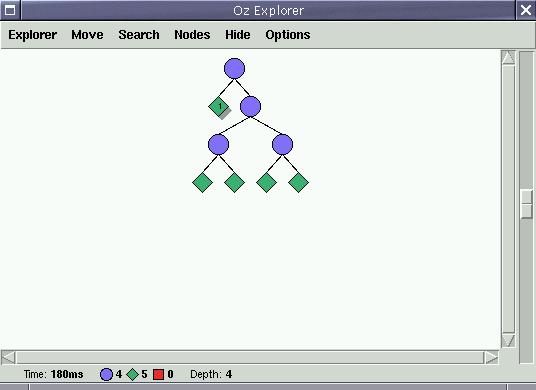

Next: Commandline, Previous: Main window, Up: xdk
We employ the Oz Explorer to display the search space traversed during the search for solutions. The Oz Explorer is described in more detail in http://www.mozart-oz.org/documentation/explorer/index.html. Essentially, blue circles denote choice points (XDG analyses which are not yet fully specified) in the search space, green diamonds solutions (fully specified XDG analyses) and red boxes failures. If the search space contains only red boxes, the solver could not find a solution for the input sentence. We show an example Explorer search tree below:

Non-failed nodes in the search tree (blue circles and green diamonds) can be double-clicked to invoke the used outputs.
Note that you can get a raw display of the underlying representation
of the solver by selecting the menu Nodes, sub menu
Information action, and then Inspect. This uses the Oz
Inspector. If you choose Show, the display is printed to
stdout. Choose Outputs to get back to the used outputs.